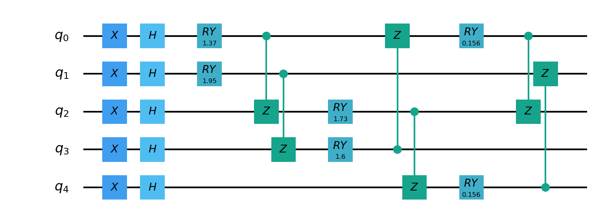
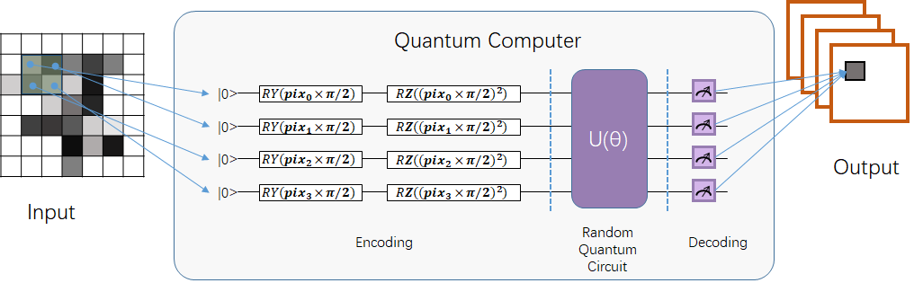
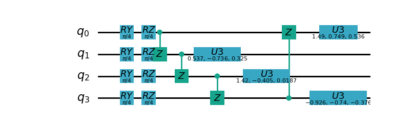

Use pyQPanda3 quantum machine learning module¶
Warning
The quantum computing part of the following interface uses pyqpanda3 https://qcloud.originqc.com.cn/document/qpanda-3/index.html.
If you use the QCloud function under this module, there will be errors when importing pyqpanda2 in the code or using pyvqnet’s pyqpanda2 related package interface.
Quantum computing layer¶
QuantumLayer¶
If you are familiar with pyQPanda3 syntax, you can use the interface QuantumLayer to customize the pyqpanda3 simulator for calculation.
- class pyvqnet.qnn.pq3.quantumlayer.QuantumLayer(qprog_with_measure, para_num, diff_method: str = 'parameter_shift', delta: float = 0.01, dtype=None, name='')¶
Abstract computation module of variational quantum layer. Use pyQPanda3 to simulate a parameterized quantum circuit and get the measurement results. This variational quantum layer inherits the gradient computation module of the VQNet framework. It can use parameter drift method to calculate the gradient of circuit parameters, train variational quantum circuit models or embed variational quantum circuits into hybrid quantum and classical models.
- Parameters:
qprog_with_measure – Quantum circuit operation and measurement functions built with pyQPanda.
para_num – int - number of parameters.
diff_method – Method for solving quantum circuit parameter gradients, “parameter shift” or “finite difference”, default parameter offset.
delta – delta when calculating gradients by finite difference.
dtype – data type of the parameter, defaults: None, use the default data type: kfloat32, representing 32-bit floating point numbers.
name – the name of this module, defaults to “”.
- Returns:
a module that can calculate quantum circuits.
Note
qprog_with_measure is a quantum circuit function defined in pyQPanda3: https://qcloud.originqc.com.cn/document/qpanda-3/dc/d12/tutorial_quantum_program.html.
This function must contain two parameters, input and parameter, as function input (even if a parameter is not actually used), and the output is the measurement result or expected value of the circuit (needs to be np.ndarray or a list containing values), otherwise it will not run properly in QpandaQCircuitVQCLayerLite.
The use of the quantum circuit function qprog_with_measure (input, param) can be referred to the example below.
input: Input one-dimensional classical data. If not, input None.
param: Input one-dimensional variational quantum circuit parameters to be trained.
Note
This class has aliases QuantumLayerV2, QpandaQCircuitVQCLayerLite.
Example:
from pyvqnet.qnn.pq3.measure import ProbsMeasure from pyvqnet.qnn.pq3.quantumlayer import QuantumLayer from pyvqnet.tensor import QTensor,ones import pyqpanda3.core as pq def pqctest (input,param): num_of_qubits = 4 m_machine = pq.CPUQVM() qubits = range(num_of_qubits) circuit = pq.QCircuit() circuit<<pq.H(qubits[0]) circuit<<pq.H(qubits[1]) circuit<<pq.H(qubits[2]) circuit<<pq.H(qubits[3]) circuit<<pq.RZ(qubits[0],input[0]) circuit<<pq.RZ(qubits[1],input[1]) circuit<<pq.RZ(qubits[2],input[2]) circuit<<pq.RZ(qubits[3],input[3]) circuit<<pq.CNOT(qubits[0],qubits[1]) circuit<<pq.RZ(qubits[1],param[0]) circuit<<pq.CNOT(qubits[0],qubits[1]) circuit<<pq.CNOT(qubits[1],qubits[2]) circuit<<pq.RZ(qubits[2],param[1]) circuit<<pq.CNOT(qubits[1],qubits[2]) circuit<<pq.CNOT(qubits[2],qubits[3]) circuit<<pq.RZ(qubits[3],param[2]) circuit<<pq.CNOT(qubits[2],qubits[3]) prog = pq.QProg() prog<<circuit rlt_prob = ProbsMeasure(m_machine,prog,[0,2]) return rlt_prob pqc = QuantumLayer(pqctest,3) #classic data as input input = QTensor([[1,2,3,4],[4,2,2,3],[3.0,3,2,2]] ) #forward circuits rlt = pqc(input) print(rlt) grad = ones(rlt.data.shape)*1000 #backward circuits rlt.backward(grad) print(pqc.m_para.grad)
QpandaQProgVQCLayer¶
- class pyvqnet.qnn.pq3.quantumlayer.QuantumLayerV3(origin_qprog_func, para_num, qvm_type='cpu', pauli_str_dict=None, shots=1000, initializer=None, dtype=None, name='')¶
It submits the parameterized quantum circuit to the local QPanda3 full-amplitude simulator for calculation and trains the parameters in the circuit. It supports batch data and uses the parameter shift rule to estimate the gradient of the parameters. For CRX, CRY, CRZ, this layer uses the formula in https://iopscience.iop.org/article/10.1088/1367-2630/ac2cb3, and the rest of the logic gates use the default parameter drift method to calculate the gradient.
- Parameters:
origin_qprog_func – The callable quantum circuit function built by QPanda.
para_num – int - Number of parameters; parameters are one-dimensional.
qvm_type – str - Type of pyqpanda3 simulator to use, cpu or gpu, default cpu.
pauli_str_dict – dict|list - Dictionary or list of dictionaries representing the Pauli operators in the quantum circuit. Default is None.
shots – int - Number of measurement shots. Default is 1000.
initializer – Initializer for parameter values. Default is None.
dtype – Data type of the parameter. Default is None, which means using the default data type.
name – Name of the module. Default is the empty string.
- Returns:
Returns a QpandaQProgVQCLayer class
Note
origin_qprog_func is a quantum circuit function defined by the user using pyQPanda3: https://qcloud.originqc.com.cn/document/qpanda-3/dc/d12/tutorial_quantum_program.html. .
This function must contain two parameters, input and parameter, as function input (even if a parameter is not actually used), and the output is pyqpanda3.core.QProg type data, otherwise it cannot run properly in QuantumLayerV3.
origin_qprog_func (input,param )
input: user-defined array class input 1-dimensional classical data.
param: array_like input user-defined 1-dimensional quantum circuit parameters.
Note
This class has an alias QuantumLayerV3 .
Example:
import pyqpanda3.core as pq import pyvqnet from pyvqnet.qnn.pq3.quantumlayer import QuantumLayerV3 def qfun(input, param ): m_qlist = range(3) cubits = range(3) measure_qubits = [0,1, 2] m_prog = pq.QProg() cir = pq.QCircuit(3) cir<<pq.RZ(m_qlist[0], input[0]) cir<<pq.RX(m_qlist[2], input[2]) qcir = pq.RX(m_qlist[1], param[1]).control(m_qlist[0]) cir<<qcir qcir = pq.RY(m_qlist[0], param[2]).control(m_qlist[1]) cir<<qcir cir<<pq.RY(m_qlist[0], input[1]) qcir = pq.RZ(m_qlist[0], param[3]).control(m_qlist[1]) cir<<qcir m_prog<<cir for idx, ele in enumerate(measure_qubits): m_prog << pq.measure(m_qlist[ele], cubits[idx]) # pylint: disable=expression-not-assigned return m_prog from pyvqnet.utils.initializer import ones l = QuantumLayerV3(qfun, 4, "cpu", pauli_str_dict=None, shots=1000, initializer=ones, name="") x = pyvqnet.tensor.QTensor( [[2.56, 1.2,-3]], requires_grad=True) y = l(x) y.backward() print(l.m_para.grad.to_numpy()) print(x.grad.to_numpy())
QuantumBatchAsyncQcloudLayer¶
When you install the latest version of pyqpanda3, you can use this interface to define a variational circuit and submit it to the originqc real chip for operation.
- class pyvqnet.qnn.pq3.quantumlayer.QuantumBatchAsyncQcloudLayer(origin_qprog_func, qcloud_token, para_num, pauli_str_dict=None, shots=1000, initializer=None, dtype=None, name='', diff_method='parameter_shift', submit_kwargs={}, query_kwargs={})¶
An abstract computing module for the originqc real chip using pyqpanda3 QCLOUD. It submits parameterized quantum circuits to the real chip and obtains measurement results. If diff_method == “random_coordinate_descent” , the layer will randomly select a single parameter to calculate the gradient, and other parameters will remain zero. Reference: https://arxiv.org/abs/2311.00088
Note
qcloud_token is the api token you applied for at https://qcloud.originqc.com.cn/.
origin_qprog_func needs to return data of type pyqpanda3.core.QProg. If pauli_str_dict is not set, it is necessary to ensure that the measure has been inserted into the QProg.
origin_qprog_func must be in the following format:
origin_qprog_func(input,param)
input: Input 1~2D classical data. In the case of 2D, the first dimension is the batch size.
param: Input the parameters to be trained for the 1D variational quantum circuit.
- Parameters:
origin_qprog_func – The variational quantum circuit function built by QPanda, which must return a QProg.
qcloud_token – str - The type of quantum machine or the cloud token used for execution.
para_num – int - The number of parameters, the parameter is a QTensor of size [para_num].
pauli_str_dict – dict|list - A dictionary or list of dictionaries representing the Pauli operators in the quantum circuit. The default is “None”, which performs measurement operations. If a dictionary of Pauli operators is entered, a single expectation or multiple expectations will be calculated.
shots – int - The number of measurements. The default value is 1000.
initializer – Initializer for parameter values. The default is “None”, which uses a 0~2*pi normal distribution.
dtype – The data type of the parameter. The default value is None, which means using the default data type pyvqnet.kfloat32.
name – The name of the module. The default is an empty string.
diff_method – Differentiation method for gradient calculation. The default is “parameter_shift”, “random_coordinate_descent”.
submit_kwargs – Additional keyword parameters for submitting quantum circuits, default: {“chip_id”:”origin_wukong”,”is_amend”:True,”is_mapping”:True,”is_optimization”:True,”compile_level”:3,”default_task_group_size”:200,”test_qcloud_fake”:False,”if_print_qcloud_log”:False}, when test_qcloud_fake is set to True, local CPUQVM simulation.
query_kwargs – Additional keyword parameters for querying quantum results, default: {“timeout”:2,”print_query_info”:True,”sub_circuits_split_size”:1}.
- Returns:
A module that can compute quantum circuits.
Example:
import pyqpanda3.core as pq import pyvqnet from pyvqnet.qnn.pq3.quantumlayer import QuantumBatchAsyncQcloudLayer def qfun(input,param): measure_qubits = [0,2] m_qlist = range(6) cir = pq.QCircuit(6) cir << (pq.RZ(m_qlist[0],input[0])) cir << pq.CNOT(m_qlist[0],m_qlist[1]) cir << pq.RY(m_qlist[1],param[0]) cir << pq.CNOT(m_qlist[0],m_qlist[2]) cir << pq.RZ(m_qlist[1],input[1]) cir << pq.RY(m_qlist[2],param[1]) cir << pq.H(m_qlist[2]) m_prog = pq.QProg(cir) for idx, ele in enumerate(measure_qubits): m_prog << pq.measure(m_qlist[ele], m_qlist[idx]) # pylint: disable=expression-not-assigned return m_prog l = QuantumBatchAsyncQcloudLayer(qfun, "3047DE8A59764BEDAC9C3282093B16AF1", 2, pauli_str_dict=None, shots = 1000, initializer=None, dtype=None, name="", diff_method="parameter_shift", submit_kwargs={"test_qcloud_fake":True}, query_kwargs={}) x = pyvqnet.tensor.QTensor([[0.56,1.2],[0.56,1.2],[0.56,1.2],[0.56,1.2],[0.56,1.2]],requires_grad= True) y = l(x) print(y) y.backward() print(l.m_para.grad) print(x.grad) def qfun2(input,param ): m_qlist = range(6) cir = pq.QCircuit(6) cir<<pq.RZ(m_qlist[0],input[0]) cir<<pq.CNOT(m_qlist[0],m_qlist[1]) cir<<pq.RY(m_qlist[1],param[0]) cir<<pq.CNOT(m_qlist[0],m_qlist[2]) cir<<pq.RZ(m_qlist[1],input[1]) cir<<pq.RY(m_qlist[2],param[1]) cir<<pq.H(m_qlist[2]) m_prog = pq.QProg(cir) return m_prog l = QuantumBatchAsyncQcloudLayer(qfun2, "3047DE8A59764BEDAC9C3282093B16AF", 2, pauli_str_dict={'Z0 X1':10,'':-0.5,'Y2':-0.543,"":3333}, shots = 1000, initializer=None, dtype=None, name="", diff_method="parameter_shift", submit_kwargs={"test_qcloud_fake":True}, query_kwargs={}) x = pyvqnet.tensor.QTensor([[0.56,1.2],[0.56,1.2],[0.56,1.2],[0.56,1.2]],requires_grad= True) y = l(x) print(y) y.backward() print(l.m_para.grad) print(x.grad)
QuantumLayerAdjoint¶
- class pyvqnet.qnn.pq3.quantumlayer.QuantumLayerAdjoint(pq3_vqc_circuit, param_num, pauli_dicts, dtype=None, name='')¶
This class uses the pyqpanda3 VQCircuit interface (https://qcloud.originqc.com.cn/document/qpanda-3/d8/d94/tutorial_variational_quantum_circuit.html) to compute the gradients of parameters in a quantum circuit with respect to the Hamiltonian using the adjoint method.
This class supports batch input and multiple Hamiltonian outputs.
Note
When using this interface, you must construct the circuit using logic gates from VQCircuit.
Currently, limited logic gates are supported; an exception will be thrown if unsupported.
The
pq3_vqc_circuitinput parameter can only contain two parameters, x and param, which must be a one-dimensional array or list.In the
pq3_vqc_circuitfunction, users must usepyqpanda3.vqcircuit.VQCircuit().set_Paramto customize how inputs and parameters are handled.In addition, users must pre-enter the number of parameters in
param_num. This interface will initialize a parameterm_parawith a length ofparam_num.See the example below.
- Parameters:
pq3_vqc_circuit – Customize the pyqpanda3 VQCircuit circuit.
param_num – Number of parameters. :param pauli_dicts: Expected observations, can be a list.
dtype – Parameter type, kfloat32 or kfloat64, default: None, use kfloat32.
name – The name of this interface.
- Returns:
Returns a QuantumLayerAdjoint instance
Example:
from pyvqnet.qnn.pq3 import QuantumLayerAdjoint from pyvqnet import tensor from pyqpanda3.vqcircuit import VQCircuit import pyqpanda3 as pq3 l = 3 n = 7 def pqctest(x,param): vqc = VQCircuit() vqc.set_Param([len(param) +len(x)]) w_offset = len(x) for j in range(len(x)): vqc << pq3.core.RX(j, vqc.Param([j ])) for j in range(l): for i in range(n - 1): vqc << pq3.core.CNOT(i, i + 1) for i in range(n): vqc << pq3.core.RX(i, vqc.Param([w_offset + 3 * n * j + i])) vqc << pq3.core.RZ(i, vqc.Param([w_offset + 3 * n * j + i + n])) vqc << pq3.core.RY(i, vqc.Param([w_offset + 3 * n * j + i + 2 * n])) return vqc Xn_string = ' '.join([f'X{i}' for i in range(n)]) pauli_dict = {Xn_string:1.} layer = QuantumLayerAdjoint(pqctest,3*l*n,pauli_dict) x = tensor.randn([2,5]) x.requires_grad = True y = layer(x) y.backward() print(layer.m_para.grad) print(x.grad) Xn_string = ' '.join([f'X{i}' for i in range(n)]) Zn_string = ' '.join([f'Z{i}' for i in range(n)]) pauli_dict = {Xn_string:1.,Zn_string:0.5} layer = QuantumLayerAdjoint(pqctest,3*l*n,pauli_dict) x = tensor.randn([2,5]) x.requires_grad = True y = layer(x) y.backward() print(layer.m_para.grad) print(x.grad) Xn_string = ' '.join([f'X{i}' for i in range(n)]) Zn_string = ' '.join([f'Z{i}' for i in range(n)]) pauli_dict = {Xn_string:1.,Zn_string:0.5} layer = QuantumLayerAdjoint(pqctest,3*l*n,pauli_dict) x = tensor.randn([1,5]) x.requires_grad = True y = layer(x) y.backward() print(layer.m_para.grad) print(x.grad) Xn_string = ' '.join([f'X{i}' for i in range(n)]) Zn_string = ' '.join([f'Z{i}' for i in range(n)]) pauli_dict = [{Xn_string:1.,Zn_string:0.5},{Xn_string:1.,Zn_string:0.5}] layer = QuantumLayerAdjoint(pqctest,3*l*n,pauli_dict) x = tensor.randn([1,5]) x.requires_grad = True y = layer(x) y.backward() print(layer.m_para.grad) print(x.grad) Xn_string = ' '.join([f'X{i}' for i in range(n)]) Zn_string = ' '.join([f'Z{i}' for i in range(n)]) pauli_dict = [{Xn_string:1.,Zn_string:0.5},{Xn_string:1.,Zn_string:0.5}] layer = QuantumLayerAdjoint(pqctest,3*l*n,pauli_dict) x = tensor.randn([2,5]) x.requires_grad = True y = layer(x) y.backward() print(layer.m_para.grad) print(x.grad) """ [-0.1086438, 0.1805159, 0.2619071,..., 0.1508062, 0.0329617,-0.0043367] <QTensor [63] DEV_CPU kfloat32> [[-0.0425088, 0.0187212,-0.0326243, 0.1314874,-0.0729216], [-0.0972663,-0.0371378,-0.0455299,-0.0170686,-0.0328533]] <QTensor [2, 5] DEV_CPU kfloat32> [ 0.0706403,-0.1070583, 0.0547093,...,-0.0183769,-0.0742296, 0.0026942] <QTensor [63] DEV_CPU kfloat32> [[-0.07577 ,-0.1364278, 0.0220043, 0.0690343, 0.0281384], [ 0.0075356,-0.1627405,-0.0381604, 0.1185545, 0.1409108]] <QTensor [2, 5] DEV_CPU kfloat32> [-0.0634308,-0.0128268, 0.0396237,...,-0.0350691,-0.116307 , 0.0164972] <QTensor [63] DEV_CPU kfloat32> [[-0.0823639,-0.0418629, 0.0105356, 0.0699336, 0.041226 ]] <QTensor [1, 5] DEV_CPU kfloat32> [-0.1281752, 0.0852512, 0.0678721,...,-0.080481 , 0.0202518,-0.0348869] <QTensor [63] DEV_CPU kfloat32> [[-0.0339751,-0.0330053,-0.0651799, 0.2171837,-0.1267595]] <QTensor [1, 5] DEV_CPU kfloat32> [ 0.305574 , 0.2730191, 0.0605986,...,-0.2138517,-0.2475468, 0.174026 ] <QTensor [63] DEV_CPU kfloat32> [[ 0.1867954,-0.0704528,-0.0603823,-0.0123921,-0.0938597], [-0.041001 ,-0.2520995, 0.0683114,-0.0986969, 0.1000023]] <QTensor [2, 5] DEV_CPU kfloat32> """
grad¶
- pyvqnet.qnn.pq3.quantumlayer.grad(quantum_prog_func, input_params, *args)¶
The grad function provides an interface for calculating the gradient of the parameters of the user-designed quantum circuit with parameters. Users can use pyQPanda3 to design the circuit running function
quantum_prog_funcas shown below, and pass it as a parameter to the grad function. The second parameter of the grad function is the coordinates of the quantum logic gate parameter gradient you want to calculate. The shape of the return value is [num of parameters,num of output].- Parameters:
quantum_prog_func – quantum circuit running function designed by pyQPanda3.
input_params – parameters to be calculated for the gradient.
*args – other parameters input to the quantum_prog_func function.
- Returns:
Gradient of parameters
Examples:
from pyvqnet.qnn.pq3 import grad, ProbsMeasure import pyqpanda3.core as pq def pqctest(param): machine = pq.CPUQVM() qubits = range(2) circuit = pq.QCircuit(2) circuit<<pq.RX(qubits[0], param[0]) circuit<<pq.RY(qubits[1], param[1]) circuit<<pq.CNOT(qubits[0], qubits[1]) circuit<<pq.RX(qubits[1], param[2]) prog = pq.QProg() prog<<circuit EXP = ProbsMeasure(machine,prog,[1]) return EXP g = grad(pqctest, [0.1,0.2, 0.3]) print(g) exp = pqctest([0.1,0.2, 0.3]) print(exp)
QLinear¶
QLinear implements a quantum full-connection algorithm. First, the data is encoded into a quantum state, and then the evolution operation and measurement are performed through quantum circuits to obtain the final full-connection result.

- class pyvqnet.qnn.qlinear.QLinear(input_channels, output_channels, machine: str = "CPU"))¶
Quantum fully connected module. The input to the fully connected module is of shape (input channels, output channels). Note that this layer does not take variational quantum parameters.
- Parameters:
input_channels – int - Number of input channels.
output_channels – int - Number of output channels.
machine – str - The virtual machine to use, CPU simulation is used by default.
- Returns:
Quantum fully connected layer.
Exmaple:
from pyvqnet.tensor import QTensor from pyvqnet.qnn.qlinear import QLinear params = [[0.37454012, 0.95071431, 0.73199394, 0.59865848, 0.15601864, 0.15599452], [1.37454012, 0.95071431, 0.73199394, 0.59865848, 0.15601864, 0.15599452], [1.37454012, 1.95071431, 0.73199394, 0.59865848, 0.15601864, 0.15599452], [1.37454012, 1.95071431, 1.73199394, 1.59865848, 0.15601864, 0.15599452]] m = QLinear(6, 2) input = QTensor(params, requires_grad=True) output = m(input) output.backward() print(output) #[ #[0.0568473, 0.1264389], #[0.1524036, 0.1264389], #[0.1524036, 0.1442845], #[0.1524036, 0.1442845] #]
Qconv¶
Qconv is a quantum convolution algorithm interface. Quantum convolution operation uses quantum circuits to perform convolution operations on classical data. It does not need to calculate multiplication and addition operations. It only needs to encode the data into quantum states, and then perform evolution operations and measurements through quantum circuits to obtain the final convolution results. Apply for the same number of quantum bits according to the number of input data in the range of the convolution kernel, and then build quantum circuits for calculation.

The quantum circuit is encoded by first inserting \(RY\) and \(RZ\) gates on each qubit, and then using \(Z\) and \(U3\) on any two qubits to entangle and exchange information. The following is an example of 4 qubits

- class pyvqnet.qnn.qcnn.qconv.QConv(input_channels, output_channels, quantum_number, stride=(1, 1), padding=(0, 0), kernel_initializer=normal, machine: str = 'CPU', dtype=None, name='')¶
Quantum convolution module. Replace the Conv2D kernel with a quantum circuit. The input of the conv module is of shape (batch size, input channels, height, width) Samuel et al. (2020) .
- param input_channels:
int - Number of input channels.
- param output_channels:
int - Number of output channels.
- param quantum_number:
int - The size of a single kernel.
- param stride:
tuple - The stride, defaults to (1,1).
- param padding:
tuple - Padding, defaults to (0,0).
- param kernel_initializer:
callable - Defaults to normal distribution.
- param machine:
str - The virtual machine to use, defaults to CPU simulation.
- param dtype:
The data type of the parameter, defaults: None, use the default data type: kfloat32, representing 32-bit floating point numbers.
- param name:
The name of this module, defaults to “”.
- return:
Quantum convolution layer.
Example:
from pyvqnet.tensor import tensor from pyvqnet.qnn.qcnn.qconv import QConv x = tensor.ones([1,3,4,4]) layer = QConv(input_channels=3, output_channels=2, quantum_number=4, stride=(2, 2)) y = layer(x) print(y) # [ # [[[-0.0889078, -0.0889078], # [-0.0889078, -0.0889078]], # [[0.7992646, 0.7992646], # [0.7992646, 0.7992646]]] # ]
Quantum logic gates¶
The way to process quantum bits is quantum logic gate. Using quantum logic gate, we consciously evolve quantum states. Quantum logic gate is the basis of quantum algorithm.
Basic quantum logic gate¶
In this section, we use the various logic gates of pyqpanda3 developed by Origin Quantum to build quantum circuits and perform quantum simulation. The logic gates currently supported by pyQPanda3 can refer to the definition of pyQPanda3 Quantum logic gate. In addition, VQNet also encapsulates some commonly used quantum logic gate combinations in quantum machine learning:
BasicEmbeddingCircuit¶
- pyvqnet.qnn.pq3.template.BasicEmbeddingCircuit(input_feat, qlist)¶
Encode n binary features into the ground state of n qubits.
For example, for
features=([0, 1, 1]), the ground state is \(|011 \rangle\) in a quantum system.- Parameters:
input_feat –
(n)binary input of size.qlist – qubits to construct the template circuit.
- Returns:
quantum circuit.
Example:
from pyvqnet.qnn.pq3.template import BasicEmbeddingCircuit import pyqpanda3.core as pq from pyvqnet import tensor input_feat = tensor.QTensor([1,1,0]) qlist = range(3) circuit = BasicEmbeddingCircuit(input_feat,qlist) print(circuit)
AngleEmbeddingCircuit¶
- pyvqnet.qnn.pq3.template.AngleEmbeddingCircuit(input_feat, qubits, rotation: str = 'X')¶
Encode \(N\) features into the rotation angle of \(n\) qubits, where \(N \leq n\).
Rotation can be chosen as: ‘X’ , ‘Y’ , ‘Z’, as defined by the
rotationparameter:rotation='X'Use the feature as the angle of the RX rotation.rotation='Y'Use the feature as the angle of the RY rotation.rotation='Z'Use the feature as the angle of the RZ rotation.
The length of
featuresmust be less than or equal to the number of qubits. If the length infeaturesis less than qubits, the circuit does not apply the remaining rotation gates.- Parameters:
input_feat – numpy array representing the parameters.
qubits – qubit indices.
rotation – what rotation to use, defaults to “X”.
- Returns:
quantum circuit.
Example:
from pyvqnet.qnn.pq3.template import AngleEmbeddingCircuit import numpy as np m_qlist = range(2) input_feat = np.array([2.2, 1]) C = AngleEmbeddingCircuit(input_feat,m_qlist,'X') print(C) C = AngleEmbeddingCircuit(input_feat,m_qlist,'Y') print(C) C = AngleEmbeddingCircuit(input_feat,m_qlist,'Z') print(C)
IQPEmbeddingCircuits¶
- pyvqnet.qnn.pq3.template.IQPEmbeddingCircuits(input_feat, qubits, rep: int = 1)¶
Encode \(n\) features into \(n\) qubits using diagonal gates of an IQP circuit.
The encoding is proposed by Havlicek et al. (2018).
The basic IQP circuit can be repeated by specifying
n_repeats.- Parameters:
input_feat – numpy array representing the parameters.
qubits – list of qubit indices.
rep – Repeat the quantum circuit block, the default number of times is 1.
- Returns:
quantum circuit.
Example:
import numpy as np from pyvqnet.qnn.pq3.template import IQPEmbeddingCircuits input_feat = np.arange(1,100) qlist = range(3) circuit = IQPEmbeddingCircuits(input_feat,qlist,rep = 3) print(circuit)
RotCircuit¶
- pyvqnet.qnn.pq3.template.RotCircuit(para, qubits)¶
Arbitrary single qubit rotation. The number of qlists should be 1, and the number of parameters should be 3.
\[\begin{split}R(\phi,\theta,\omega) = RZ(\omega)RY(\theta)RZ(\phi)= \begin{bmatrix} e^{-i(\phi+\omega)/2}\cos(\theta/2) & -e^{i(\phi-\omega)/2}\sin(\theta/2) \\ e^{-i(\phi-\omega)/2}\sin(\theta/2) & e^{i(\phi+\omega)/2}\cos(\theta/2) \end{bmatrix}.\end{split}\]- Parameters:
para – numpy array representing parameters \([\phi, \theta, \omega]\).
qubits – qubit index, only single qubits are accepted.
- Returns:
quantum circuit.
Example:
from pyvqnet.qnn.pq3.template import RotCircuit import pyqpanda3.core as pq from pyvqnet import tensor m_qlist = 1 param =tensor.QTensor([3,4,5]) c = RotCircuit(param,m_qlist) print(c)
CRotCircuit¶
- pyvqnet.qnn.pq3.template.CRotCircuit(para, control_qubits, rot_qubits)¶
Controlled Rot operator.
\[\begin{split}CR(\phi, \theta, \omega) = \begin{bmatrix} 1 & 0 & 0 & 0 \\ 0 & 1 & 0 & 0\\ 0 & 0 & e^{-i(\phi+\omega)/2}\cos(\theta/2) & -e^{i(\phi-\omega)/2}\sin(\theta/2)\\ 0 & 0 & e^{-i(\phi-\omega)/2}\sin(\theta/2) & e^{i(\phi+\omega)/2}\cos(\theta/2) \end{bmatrix}.\end{split}\]- Parameters:
para – A numpy array representing the parameters \([\phi, \theta, \omega]\).
control_qubits – qubit index, the number of qubits should be 1.
rot_qubits – Rot qubit index, the number of qubits should be 1.
- Returns:
quantum circuit.
Example:
from pyvqnet.qnn.pq3.template import CRotCircuit import pyqpanda3.core as pq import numpy as np m_qlist = range(1) control_qlist = [1] param = np.array([3,4,5]) cir = CRotCircuit(param,control_qlist,m_qlist) print(cir)
CSWAPcircuit¶
- pyvqnet.qnn.pq3.template.CSWAPcircuit(qubits)¶
Controlled SWAP circuit.
\[\begin{split}CSWAP = \begin{bmatrix} 1 & 0 & 0 & 0 & 0 & 0 & 0 & 0 \\ 0 & 1 & 0 & 0 & 0 & 0 & 0 & 0 \\ 0 & 0 & 1 & 0 & 0 & 0 & 0 & 0 \\ 0 & 0 & 0 & 1 & 0 & 0 & 0 & 0 \\ 0 & 0 & 0 & 0 & 1 & 0 & 0 & 0 \\ 0 & 0 & 0 & 0 & 0 & 0 & 1 & 0 \\ 0 & 0 & 0 & 0 & 0 & 1 & 0 & 0 \\ 0 & 0 & 0 & 0 & 0 & 0 & 0 & 1 \end{bmatrix}.\end{split}\]Note
The first qubit provided corresponds to the control qubit .
- Parameters:
qubits – list of qubit indices. The first qubit is the control qubit. The length of qlist must be 3.
- Returns:
The quantum circuit.
Example:
from pyvqnet.qnn.pq3 import CSWAPcircuit import pyqpanda3.core as pq m_machine = pq.CPUQVM() m_qlist = range(3) c =CSWAPcircuit([m_qlist[1],m_qlist[2],m_qlist[0]]) print(c)
Controlled_Hadamard¶
- pyvqnet.qnn.pq3.template.Controlled_Hadamard(qubits)¶
Controlled Hadamard logic gate
\[\begin{split}CH = \begin{bmatrix} 1 & 0 & 0 & 0 \\ 0 & 1 & 0 & 0 \\ 0 & 0 & \frac{1}{\sqrt{2}} & \frac{1}{\sqrt{2}} \\ 0 & 0 & \frac{1}{\sqrt{2}} & -\frac{1}{\sqrt{2}} \end{bmatrix}.\end{split}\]- Parameters:
qubits – qubit index.
Examples:
import pyqpanda3.core as pq machine = pq.CPUQVM() qubits =range(2) from pyvqnet.qnn.pq3 import Controlled_Hadamard cir = Controlled_Hadamard(qubits) print(cir)
CCZ¶
- pyvqnet.qnn.pq3.template.CCZ(qubits)¶
Controlled-controlled-Z logic gate.
\[\begin{split}CCZ = \begin{pmatrix} 1 & 0 & 0 & 0 & 0 & 0 & 0 & 0\\ 0 & 1 & 0 & 0 & 0 & 0 & 0 & 0 & 0\\ 0 & 0 & 1 & 0 & 0 & 0 & 0 & 0 & 0\\ 0 & 0 & 0 & 1 & 0 & 0 & 0 & 0\\ 0 & 0 & 0 & 0 & 0 & 1 & 0 & 0 & 0\\ 0 & 0 & 0 & 0 & 0 & 0 & 1 & 0 & 0\\ 0 & 0 & 0 & 0 & 0 & 0 & 0 & 1 & 0 & 0\\ 0 & 0 & 0 & 0 & 0 & 0 & 0 & 0 & -1 \end{pmatrix}\end{split}\]- Parameters:
qubits – qubit index.
- Returns:
pyQPanda3 QCircuit
Example:
import pyqpanda3.core as pq machine = pq.CPUQVM() qubits = range(3) from pyvqnet.qnn.pq3 import CCZ cir = CCZ(qubits)
FermionicSingleExcitation¶
- pyvqnet.qnn.pq3.template.FermionicSingleExcitation(weight, wires, qubits)¶
Coupled cluster single excitation operator for exponentiation of tensor products of Pauli matrices. The matrix form is given by:
\[\hat{U}_{pr}(\theta) = \mathrm{exp} \{ \theta_{pr} (\hat{c}_p^\dagger \hat{c}_r -\mathrm{H.c.}) \},\]- Parameters:
weight – variable parameter on qubit p.
wires – represents a subset of qubit indices in the interval [r, p]. The minimum length must be 2. The first index value is interpreted as r and the last index value is interpreted as p. The intermediate indices are acted upon by CNOT gates to compute the parity of the qubit set.
qubits – qubit indices.
- Returns:
pyQPanda3 QCircuit
Examples:
from pyvqnet.qnn.pq3 import FermionicSingleExcitation, expval weight=0.5 import pyqpanda3.core as pq machine = pq.CPUQVM() qlists = range(3) cir = FermionicSingleExcitation(weight, [1, 0, 2], qlists)
FermionicDoubleExcitation¶
- pyvqnet.qnn.pq3.template.FermionicDoubleExcitation(weight, wires1, wires2, qubits)¶
Coupled clustered double excitation operator for the tensor product of Pauli matrices, matrix form is given by:
\[\hat{U}_{pqrs}(\theta) = \mathrm{exp} \{ \theta (\hat{c}_p^\dagger \hat{c}_q^\dagger \hat{c}_r \hat{c}_s - \mathrm{H.c.}) \},\]where \(\hat{c}\) and \(\hat{c}^\dagger\) is the fermion annihilation and creation operators and indexes \(r, s\) and \(p, q\) on occupied and empty molecular orbitals respectively. Using the Jordan-Wigner transformation the fermion operator defined above can be written in terms of the Pauli matrix (see arXiv:1805.04340 for more details)
\[\begin{split}\hat{U}_{pqrs}(\theta) = \mathrm{exp} \Big\{ \frac{i\theta}{8} \bigotimes_{b=s+1}^{r-1} \hat{Z}_b \bigotimes_{a=q+1}^{p-1} \hat{Z}_a (\hat{X}_s \hat{X}_r \hat{Y}_q \hat{X}_p + \hat{Y}_s \hat{X}_r \hat{Y}_q \hat{Y}_p +\\ \hat{X}_s \hat{Y}_r \hat{Y}_q \hat{Y}_p + \hat{X}_s \hat{X}_r \hat{X}_q \hat{Y}_p - \mathrm{H.c.} ) \Big\}\end{split}\]- Parameters:
weight – variable parameter
wires1 – represents the subset of qubits in the interval [s, r] occupied by the index list of qubits. The first index is interpreted as s and the last index is interpreted as r. The CNOT gate operates on the middle indexes to calculate the parity of a set of qubits.
wires2 – represents the subset of qubits in the interval [q, p] occupied by the index list of qubits. The first root index is interpreted as q and the last index is interpreted as p. The CNOT gate operates on the middle index to compute the parity of a set of qubits.
qubits – qubit indexes.
- Returns:
pyQPanda3 QCircuit
Examples:
import pyqpanda3.core as pq from pyvqnet.qnn.pq3 import FermionicDoubleExcitation, expval machine = pq.CPUQVM() qlists = range(5) weight = 1.5 cir = FermionicDoubleExcitation(weight, wires1=[0, 1], wires2=[2, 3, 4], qubits=qlists)
UCCSD¶
- pyvqnet.qnn.pq3.template.UCCSD(weights, wires, s_wires, d_wires, init_state, qubits)¶
Implements the Unitary Coupled Cluster Single and Double Excitation Simulation (UCCSD). UCCSD is a VQE simulation, commonly used to run quantum chemistry simulations.
In the first-order Trotter approximation, the UCCSD unitary function is given by:
\[\hat{U}(\vec{\theta}) = \prod_{p > r} \mathrm{exp} \Big\{\theta_{pr} (\hat{c}_p^\dagger \hat{c}_r-\mathrm{H.c.}) \Big\} \prod_{p > q > r > s} \mathrm{exp} \Big\{\theta_{pqrs} (\hat{c}_p^\dagger \hat{c}_q^\dagger \hat{c}_r \hat{c}_s-\mathrm{H.c.}) \Big\}\]where \(\hat{c}\) and \(\hat{c}^\dagger\) are fermion annihilation and
Create operators and indices \(r, s\) and \(p, q\) are the occupied and empty molecular orbitals, respectively. (For more details see arXiv:1805.04340):
- Parameters:
weights – tensor of size
(len(s_wires)+ len(d_wires))containing the parameters :math: theta_{pr} and :math: theta_{pqrs} input to the Z rotationsFermionicSingleExcitationandFermionicDoubleExcitation.wires – qubit indices to be templated
s_wires – list sequence containing qubit indices
[r,...,p]generated by a single excitation :math: vert r, p rangle = hat{c}_p^dagger hat{c}_r vert mathrm{HF} rangle, where \(\vert \mathrm{HF} \rangle\) denotes the Hartee-Fock reference state.d_wires – sequence of lists, each containing two lists Specify indices
[s, ...,r]and[q,..., p].Define dual excitation \(\vert s, r, q, p \rangle = \hat{c}_p^\dagger \hat{c}_q^\dagger \hat{c}_r\hat{c}_s \vert \mathrm{HF} \rangle\) .init_state – occupation-number vector of length
len(wires)representing the high-frequency state.init_stateInitialize the qubit state.qubits – Qubit index.
Examples:
import pyqpanda3.core as pq from pyvqnet.tensor import tensor from pyvqnet.qnn.pq3 import UCCSD, expval machine = pq.CPUQVM() qlists = range(6) weight = tensor.zeros([8]) cir = UCCSD(weight,wires = [0,1,2,3,4,5,6], s_wires=[[0, 1, 2], [0, 1, 2, 3, 4], [1, 2, 3], [1, 2, 3, 4, 5]], d_wires=[[[0, 1], [2, 3]], [[0, 1], [2, 3, 4, 5]], [[0, 1], [3, 4]], [[0, 1], [4, 5]]], init_state=[1, 1, 0, 0, 0, 0], qubits=qlists)
QuantumPoolingCircuit¶
- pyvqnet.qnn.pq3.template.QuantumPoolingCircuit(sources_wires, sinks_wires, params, qubits)¶
Quantum circuit that downsamples data.
To reduce the number of qubits in the circuit, first create pairs of qubits in the system. After initially pairing all qubits, apply the generalized 2-qubit unitary to each pair of qubits. And after applying these two qubit unitary, ignore one qubit in each pair of qubits for the rest of the neural network.
- Parameters:
sources_wires – Source qubit indices to be ignored.
sinks_wires – Target qubit indices to be retained.
params – Input parameters.
qubits – Qubit indices.
- Returns:
pyQPanda3 QCircuit
Examples:
from pyvqnet.qnn.pq3.template import QuantumPoolingCircuit import pyqpanda3.core as pq from pyvqnet import tensor qlists = range(4) p = tensor.full([6], 0.35) cir = QuantumPoolingCircuit([0, 1], [2, 3], p, qlists) print(cir)
Commonly used quantum circuit combinations¶
VQNet provides some quantum circuits commonly used in quantum machine learning research
HardwareEfficientAnsatz¶
- class pyvqnet.qnn.pq3.ansatz.HardwareEfficientAnsatz(qubits, single_rot_gate_list, entangle_gate='CNOT', entangle_rules='linear', depth=1)¶
Implementation of Hardware Efficient Ansatz introduced in the paper: Hardware-efficient Variational Quantum Eigensolver for Small Molecules .
- Parameters:
qubits – qubit index.
single_rot_gate_list – Single qubit rotation gate list consisting of one or more rotation gates acting on each qubit. Currently supported are Rx, Ry, Rz.
entangle_gate – Non-parametric entanglement gate. Supports CNOT, CZ. Default: CNOT.
entangle_rules – How the entanglement gate is used in the circuit.
linearmeans that the entanglement gate will act on every adjacent qubit.allmeans that the entanglement gate will act on any two qbuits. Default:linear.depth – Depth in ansatz, default: 1.
- Returns:
A HardwareEfficientAnsatz instance
Example:
import pyqpanda3.core as pq from pyvqnet.tensor import QTensor,tensor from pyvqnet.qnn.pq3.ansatz import HardwareEfficientAnsatz machine = pq.CPUQVM() qlist = range(4) c = HardwareEfficientAnsatz(qlist,["rx", "RY", "rz"], entangle_gate="cnot", entangle_rules="linear", depth=1) w = tensor.ones([c.get_para_num()]) cir = c.create_ansatz(w) print(cir)
BasicEntanglerTemplate¶
- class pyvqnet.qnn.pq3.template.BasicEntanglerTemplate(weights=None, num_qubits=1, rotation=pyqpanda3.RX)¶
A layer consisting of single-parameter single-qubit rotations on each qubit, followed by multiple CNOT gates combined in a closed chain or ring. The ring of CNOT gates connects each qubit to its neighbors, with the last qubit considered a neighbor of the first. The number of layers \(L\) is determined by the first dimension of the parameter
weights.- Parameters:
weights – A weight tensor of shape (L, len(qubits)). Each weight is used as a parameter in a quantum parametric gate. The default value is:
None, then (1,1) normally distributed random numbers are used as weights.num_qubits – The number of qubits, default is 1.
rotation – Use a single-parameter single-qubit gate,
pyqpanda3.RXis used as the default value.
- Returns:
A BasicEntanglerTemplate instance
Example:
import pyqpanda3.core as pq import numpy as np from pyvqnet.qnn.pq3 import BasicEntanglerTemplate np.random.seed(42) num_qubits = 5 shape = [1, num_qubits] weights = np.random.random(size=shape) machine = pq.CPUQVM() qubits = range(num_qubits) circuit = BasicEntanglerTemplate(weights=weights, num_qubits=num_qubits, rotation=pq.RZ) result = circuit.compute_circuit() circuit.print_circuit(qubits)
StronglyEntanglingTemplate¶
- class pyvqnet.qnn.pq3.template.StronglyEntanglingTemplate(weights=None, num_qubits=1, ranges=None)¶
Layers consisting of single qubit rotations and entanglers, as in circuit-centric classifier design . The parameter
weightscontains the weights of each layer. So the number of layers \(L\) is equal to the first dimension ofweights. It contains 2-qubit CNOT gates acting on \(M\) qubits, \(i = 1,...,M\). The second qubit number of each gate is given by the formula \((i+r)\mod M\), where \(r\) is a hyperparameter calledrange, and \(0 < r < M\).- Parameters:
weights – Weight tensor of shape
(L, M, 3), default value: None, use a random tensor of shape(1,1,3).num_qubits – Number of qubits, default value: 1.
ranges – Sequence that determines the range hyperparameters for each subsequent layer; default value: None, use \(r=l \ mod M\) as the value of ranges.
- Returns:
A StronglyEntanglingTemplate instance
Example:
from pyvqnet.qnn.pq3 import StronglyEntanglingTemplate import pyqpanda3.core as pq from pyvqnet.tensor import * import numpy as np np.random.seed(42) num_qubits = 3 shape = [2, num_qubits, 3] weights = np.random.random(size=shape) machine = pq.CPUQVM() qubits = range(num_qubits) circuit = StronglyEntanglingTemplate(weights, num_qubits=num_qubits ) result = circuit.compute_circuit() print(result) circuit.print_circuit(qubits)
ComplexEntangelingTemplate¶
- class pyvqnet.qnn.pq3.ComplexEntangelingTemplate(weights, num_qubits, depth)¶
Strongly entangled layer consisting of U3 gates and CNOT gates. This circuit template is from the following paper: https://arxiv.org/abs/1804.00633.
- Parameters:
weights – parameters, shape [depth,num_qubits,3]
num_qubits – number of qubits.
depth – depth of the subcircuit.
- Returns:
A ComplexEntangelingTemplate instance
Example:
from pyvqnet.qnn.pq3 import ComplexEntangelingTemplate import pyqpanda3.core as pq from pyvqnet.tensor import * depth=3 num_qubits = 8 shape = [depth, num_qubits, 3] weights = tensor.randn(shape) machine = pq.CPUQVM() qubits = range(num_qubits) circuit = ComplexEntangelingTemplate(weights, num_qubits=num_qubits,depth=depth) result = circuit.create_circuit(qubits) circuit.print_circuit(qubits)
Quantum_Embedding¶
- class pyvqnet.qnn.pq3.Quantum_Embedding(qubits, machine, num_repetitions_input, depth_input, num_unitary_layers, num_repetitions)¶
Use RZ,RY,RZ to create a variational quantum circuit to encode classical data into quantum states. Reference Quantum embeddings for machine learning. After initializing the class, its member function
compute_circuitis the running function, which can be used as a parameter to input theQuantumLayerV2class to form a layer of the quantum machine learning model.- Parameters:
qubits – The quantum bits requested by pyQPanda3.
machine – Quantum virtual machine applied by pyQPanda3.
num_repetitions_input – The number of repetitions of encoding the input in the submodule.
depth_input – The feature dimension of the input data.
num_unitary_layers – The number of repetitions of the variational quantum gate in each submodule.
num_repetitions – The number of repetitions of the submodule.
- Returns:
A Quantum_Embedding instance
Example:
from pyvqnet.qnn.pq3 import QuantumLayerV2,Quantum_Embedding from pyvqnet.tensor import tensor import pyqpanda3.core as pq depth_input = 2 num_repetitions = 2 num_repetitions_input = 2 num_unitary_layers = 2 loacl_machine = pq.CPUQVM() nq = depth_input * num_repetitions_input qubits = range(nq) cubes = range(nq) data_in = tensor.ones([12, depth_input]) data_in.requires_grad = True qe = Quantum_Embedding(nq, loacl_machine, num_repetitions_input, depth_input, num_unitary_layers, num_repetitions) qlayer = QuantumLayerV2(qe.compute_circuit, qe.param_num) data_in.requires_grad = True y = qlayer.forward(data_in) y.backward() print(data_in.grad)
Measure quantum circuits¶
expval¶
- pyvqnet.qnn.pq3.measure.expval(machine, prog, pauli_str_dict)¶
The expected value of the provided Hamiltonian observation.
If the observation is \(0.7Z\otimes X\otimes I+0.2I\otimes Z\otimes I\), then the Hamiltonian dict will be
{{'Z0, X1':0.7} ,{'Z1':0.2}}.The expval api now supports the pyQPanda3 simulator.
- Parameters:
machine – The quantum machine created by pyQPanda3.
prog – The quantum program created by pyQPanda3.
pauli_str_dict – Hamiltonian observed value.
- Returns:
expected value.
Example:
import pyqpanda3.core as pq from pyvqnet.qnn.pq3.measure import expval input = [0.56, 0.1] m_machine = pq.CPUQVM() m_qlist = range(3) cir = pq.QCircuit(3) cir<<pq.RZ(m_qlist[0],input[0]) cir<<pq.CNOT(m_qlist[0],m_qlist[1]) cir<<pq.RY(m_qlist[1],input[1]) cir<<pq.CNOT(m_qlist[0],m_qlist[2]) m_prog = pq.QProg(cir) pauli_dict = {'Z0 X1':10,'Y2':-0.543} exp2 = expval(m_machine,m_prog,pauli_dict) print(exp2)
QuantumMeasure¶
- pyvqnet.qnn.pq3.measure.QuantumMeasure(machine, prog, measure_qubits: list, shots: int = 1000, qcloud_option='')¶
Computes quantum circuit measurements. Returns measurements obtained by Monte Carlo methods.
For more details, please visit https://pyqpanda-toturial.readthedocs.io/zh/latest/Measure.html?highlight=measure_all .
The QuantumMeasure api currently only supports pyQPanda3
CPUQVMorQCloud.- Parameters:
machine – The quantum virtual machine allocated by pyQPanda3.
prog – The quantum program created by pyQPanda3.
measure_qubits – List containing the measurement bit indices.
shots – The number of measurements, the default value is 1000.
qcloud_option – Set the qcloud configuration, the default value is “”, you can pass in a QCloudOptions class, which is only useful when using qcloud.
- Returns:
Returns the measurement results obtained by the Monte Carlo method.
Example:
from pyqpanda3.core import * circuit = QCircuit(3) circuit << H(0) circuit << P(2, 0.2) circuit << RX(1, 0.9) circuit << RX(0, 0.6) circuit << RX(1, 0.3) circuit << RY(1, 0.3) circuit << RY(2, 2.7) circuit << RX(0, 1.5) prog = QProg() prog.append(circuit) machine = CPUQVM() from pyvqnet.qnn.pq3.measure import probs_measure,quantum_measure measure_result = quantum_measure(machine,prog,[2,0]) print(measure_result)
DensityMatrixFromQstate¶
- pyvqnet.qnn.pq3.measure.DensityMatrixFromQstate(state, indices)¶
Compute the density matrix of a quantum state over a specific set of qubits.
- Parameters:
state – 1D list of state vectors. The size of this list should be
(2**N,)For a number of qubitsN, qstate should start from 000 -> 111.indices – List of qubit indices in the considered subsystem.
- Returns:
Density matrix of size
(2**len(indices), 2**len(indices)).
Example:
from pyvqnet.qnn.pq3.measure import DensityMatrixFromQstate qstate = [(0.9306699299765968+0j), (0.18865613455240968+0j), (0.1886561345524097+0j), (0.03824249173404786+0j), -0.048171819846746615j, -0.00976491131165138j, -0.23763904794287155j, -0.048171819846746615j] print(DensityMatrixFromQstate(qstate,[0,1])) # [[0.86846704+0.j 0.1870241 +0.j 0.17604699+0.j 0.03791166+0.j] # [0.1870241 +0.j 0.09206345+0.j 0.03791166+0.j 0.01866219+0.j] # [0.17604699+0.j 0.03791166+0.j 0.03568649+0.j 0.00768507+0.j] # [0.03791166+0.j 0.01866219+0.j 0.00768507+0.j 0.00378301+0.j]]
VN_Entropy¶
- pyvqnet.qnn.pq3.measure.VN_Entropy(state, indices, base=None)¶
Computes the Von Neumann entropy given a state vector on a given list of qubits.
\[S( \rho ) = -\text{Tr}( \rho \log ( \rho ))\]- Parameters:
state – 1D list of state vectors. The size of this list should be
(2**N,)For a number of qubitsN, qstate should start from 000 -> 111.indices – List of qubit indices in the subsystem under consideration.
base – Base of the logarithm. If None, the natural logarithm is used.
- Returns:
floating point value of von Neumann entropy.
Example:
from pyvqnet.qnn.pq3.measure import VN_Entropy qstate = [(0.9022961387408862 + 0j), -0.06676534788028633j, (0.18290448232350312 + 0j), -0.3293638014158896j, (0.03707657410649268 + 0j), -0.06676534788028635j, (0.18290448232350312 + 0j), -0.013534006039561714j] print(VN_Entropy(qstate, [0, 1])) #0.14592917648464448
Mutal_Info¶
- pyvqnet.qnn.pq3.measure.Mutal_Info(state, indices0, indices1, base=None)¶
Computes the mutual information given the state vector on two lists of sub-qubits.
\[I(A, B) = S(\rho^A) + S(\rho^B) - S(\rho^{AB}) where :math:`S` is the von Neumann entropy.\]Mutual information is a measure of the correlation between two sub-systems. More specifically, it quantifies the amount of information one system can gain by measuring the other.
Each state can be given as a state vector in the computation basis.
- Parameters:
state – 1D list of state vectors. The size of this list should be
(2**N,)For number of qubitsN, qstate should start from 000 -> 111.indices0 – List of qubit indices in the first subsystem.
indices1 – List of qubit indices in the second subsystem.
base – Base of logarithms. If None, natural logarithms are used. Default is None.
- Returns:
Mutual information between subsystems
Example:
from pyvqnet.qnn.pq3.measure import Mutal_Info qstate = [(0.9022961387408862 + 0j), -0.06676534788028633j, (0.18290448232350312 + 0j), -0.3293638014158896j, (0.03707657410649268 + 0j), -0.06676534788028635j, (0.18290448232350312 + 0j), -0.013534006039561714j] print(Mutal_Info(qstate, [0], [2], 2)) #0.13763425302805887
Purity¶
- pyvqnet.qnn.pq3.measure.Purity(state, qubits_idx)¶
Compute the purity of a particular qubit from the state vector.
\[\gamma = \text{Tr}(\rho^2)\]where \(\rho\) is the density matrix. The purity of a normalized quantum state satisfies \(\frac{1}{d} \leq \gamma \leq 1\) , where \(d\) is the dimension of the Hilbert space. The purity of a pure state is 1.
- Parameters:
state – quantum state obtained from pyqpanda3
qubits_idx – qubit index for which purity is to be calculated
- Returns:
purity
Examples:
from pyvqnet.qnn.pq3.measure import Purity qstate = [(0.9306699299765968 + 0j), (0.18865613455240968 + 0j), (0.1886561345524097 + 0j), (0.03824249173404786 + 0j), -0.048171819846746615j, -0.00976491131165138j, -0.23763904794287155j, -0.048171819846746615j] pp = Purity(qstate, [1]) print(pp) #0.902503479761881